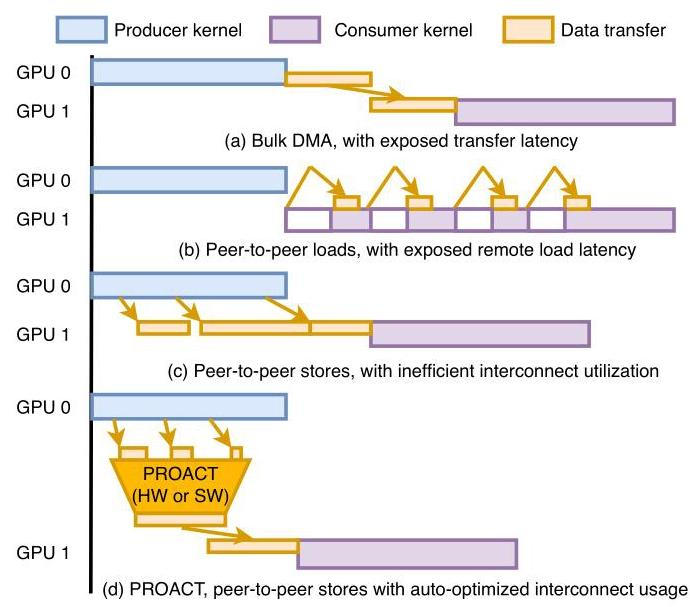
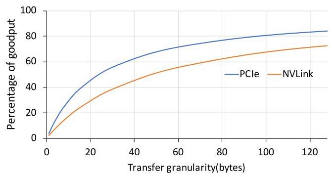
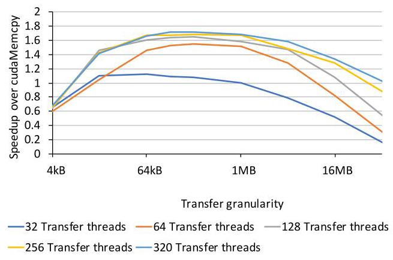
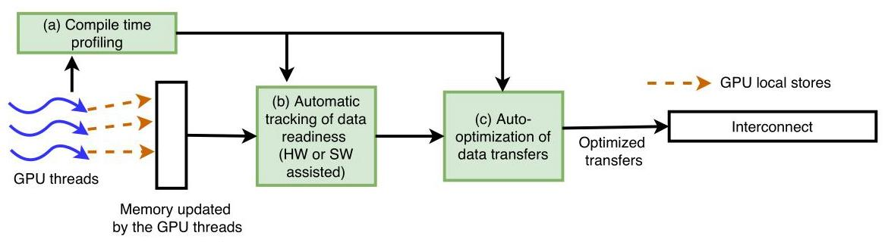
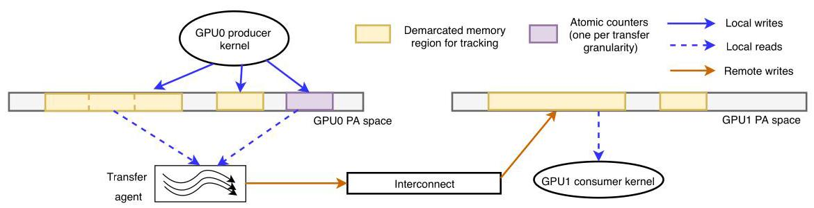
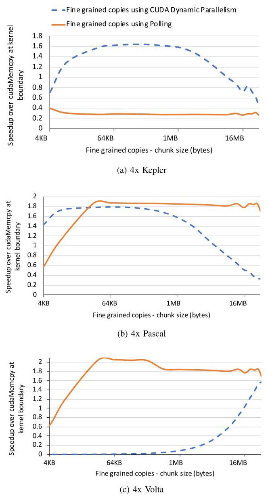
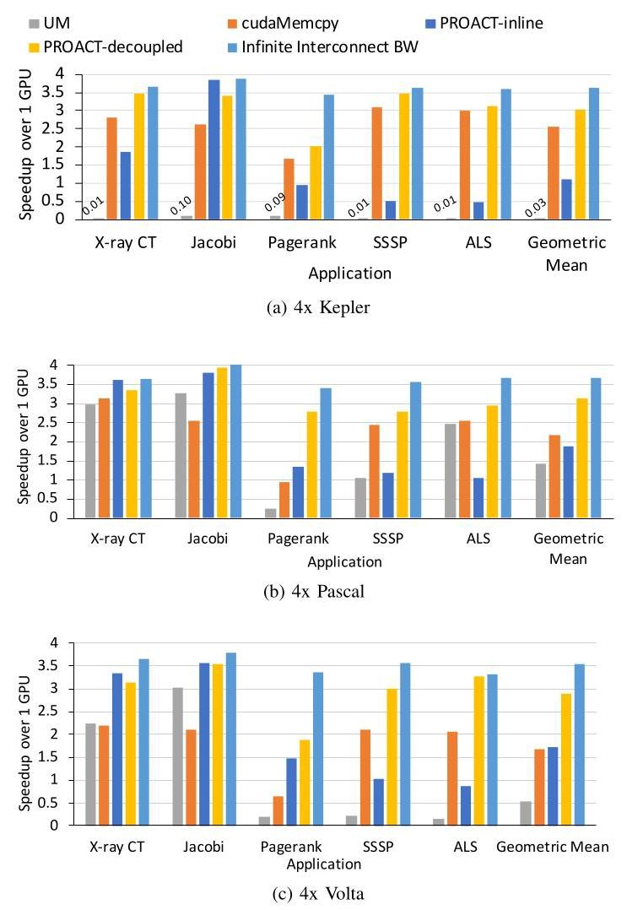
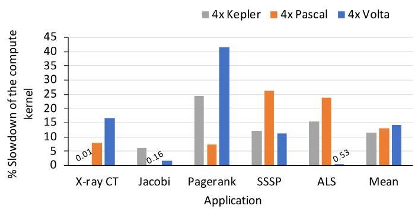
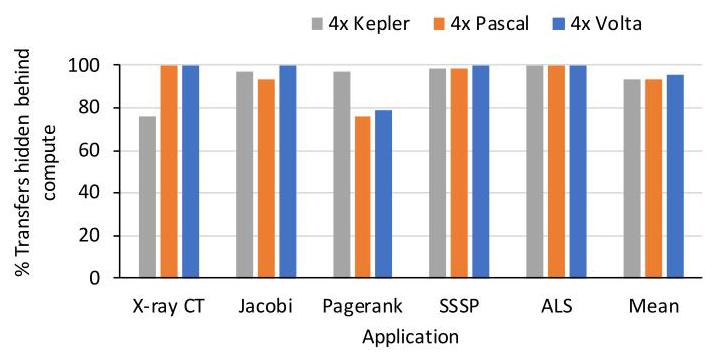
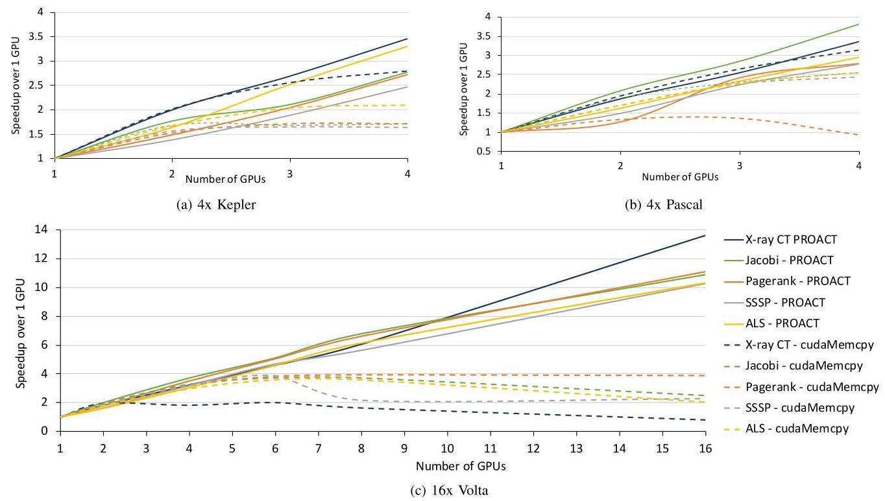

Efficient Multi-GPU Shared Memory via Automatic Optimization of Fine-Grained Transfers 深度解读
作者：Harini Muthukrishnan, David Nellans, Daniel Lustig, Jeffrey A. Fessler, Thomas F. Wenisch
会议：ISCA 2021
一句话总结：这篇论文提出 PROACT，用 profiling、数据就绪追踪和自动选择的细粒度传输机制，把 P2P store 的流水化优势和 bulk DMA 的链路效率结合起来，从而提升多 GPU strong scaling。
一、问题定义
这篇论文不是在定义一个全新的大问题，而是在多 GPU 通信这个老问题上抓住了一个很具体的系统矛盾：多 GPU 程序为了 strong scaling 必须在 GPU 间移动数据，但现有通信方式要么浪费计算资源，要么浪费互连带宽。传统 bulk DMA 能把大块数据搬得很高效，但它通常发生在 producer kernel 和 consumer kernel 之间，导致计算阶段和通信阶段被硬性切开；P2P load/store 可以在 kernel 执行期间发生，但 load 会让 consumer 线程暴露远端访问延迟，store 虽然更容易隐藏延迟，却常以 sub-cacheline 粒度发出，互连协议开销占比很高。

图 1 是全文动机最重要的图：DMA 的黄色传输块卡在两个 kernel 中间，P2P load 的箭头直接打断 consumer，P2P store 虽然和 producer 重叠但传输碎片化；PROACT 试图把这些细碎 store 收拢成互连友好的块，同时保持 producer 执行期间主动搬运的时间优势。
动机评估：动机很 solid。作者没有只停留在“多 GPU 难优化”这个泛泛问题，而是用互连 goodput 说明小粒度传输的真实代价：4-byte store 在 NVLink 上有效 goodput 低到约 8%，PCIe 上约 14%。这说明问题不是单纯“实现不够好”，而是传输粒度和互连协议开销之间存在结构性冲突。

图 2 直接支撑这个判断：传输粒度越接近 cacheline 级别，PCIe 和 NVLink 的有效数据占比越高；在几十字节以下，packetization overhead 主导总带宽消耗。因此，直接把每个线程的小 store 发到远端 GPU，并不能自然得到高性能。
核心 Insight：PROACT 的关键洞察是，GPU memory model 给了普通 weak write / gpu-scope write 一段“可延迟但必须在同步前可见”的 slack。也就是说，数据不必在每个线程写完的瞬间立刻出现在远端 GPU，只要在后续全局同步或 consumer 读取前到达即可。PROACT 利用这段 slack，把本地细粒度写入先聚合到本地内存，再由 transfer agent 在合适时机、以合适粒度主动推送到远端 GPU。
二、相关工作
论文对相关工作的组织方式基本是按“通信机制和系统层抽象”分类，而不是按时间线展开。
第一类是现有 GPU 间通信机制和通信库。bulk DMA、MPI、NCCL、NVSHMEM 等方式擅长大块通信和封装复杂拓扑，但对频繁的小/中粒度通信会暴露初始化、host runtime、同步或 page fault 开销；Unified Memory 让程序员少管数据位置，但依赖 fault/migration/prefetch，性能随应用和平台变化很大。PROACT 的差异在于它不只选择已有后端，而是把小粒度生产和大粒度传输解耦。
第二类是异步多 GPU 编程、NUMA-aware GPU、peer caching、multi-GPU coherence 等体系结构/运行时工作。这些工作关注跨 GPU 数据访问、放置和一致性，但多数没有把“P2P store 非阻塞但互连效率差”作为核心优化目标，也没有自动把细粒度写合并成高 goodput 传输。
第三类是异构系统调度、CPU-GPU/GPU-GPU 数据搬运优化、auto-tuning 和代码生成。PROACT 借鉴了 auto-tuning 的思想，但调优对象不是 kernel block size 这类传统 GPU 参数，而是跨 GPU transfer mechanism、transfer granularity、transfer thread count 这些通信参数。这个定位让它更像一个跨编译器、runtime 和硬件边界的通信优化层。
三、技术挑战
通信重叠和互连效率天然拉扯：DMA 大块传输效率高，但难以和 kernel 执行细粒度重叠；P2P store 能重叠，但直接发小写会让互连效率崩掉。PROACT 必须同时优化时间位置和空间粒度。
最优参数强依赖平台和应用：transfer granularity 太小会 initiation-bound，太大又会留下 tail transfer；transfer thread 太少无法打满互连，太多会抢占 compute kernel 的 SM 资源。Kepler、Pascal、Volta 的最佳机制并不相同，所以硬编码规则不可靠。

图 4 展示了这种参数敏感性：在 Kepler 示例里，64KB 到 1MB 的传输粒度和至少 128 个 transfer threads 才接近最佳，更多线程并不继续提升互连利用率，反而可能浪费执行资源。
数据就绪追踪不能变成新的瓶颈：如果 transfer agent 和 producer 线程解耦，就必须知道哪个 chunk 的数据已经全部生成。这个 tracking 既要足够细，才能尽早启动传输，又不能引入过多 atomic 和同步开销。
软件原型会占用真实 GPU 资源：论文验证的是软件 PROACT，polling kernel、atomic counter、CDP launch 都会消耗 SM、memory bandwidth 或 runtime latency。作者需要证明即使包含这些开销，整体收益仍然成立。
适用性有结构化假设：PROACT 需要 deterministic write pattern，并要求程序员标注 PROACT-enabled shared data structures。对于完全不规则、写次数不可确定或 compute-bound 的程序，软件版 PROACT 的收益可能有限。
四、解决方案
整体思路
PROACT 把“谁生成数据”和“谁通过互连发送数据”拆开。应用线程仍然像写 P2P shared memory 一样写入被标注的 region，但这些写先落在本地 GPU 内存；系统用 counters 追踪每个 chunk 是否就绪；一旦就绪，transfer agent 以 profiling 选出的机制和粒度把数据推到远端 GPU。这样，程序员看到的是细粒度共享内存式编程接口，互连看到的是较大粒度、可合并、可流水化的数据传输。

图 3 把 PROACT 分成三块：compile-time profiling 决定参数，data readiness tracking 判断什么时候能搬，auto-optimization of data transfers 决定怎么搬。这个分层很重要，因为论文的贡献不是单个传输 API，而是一套跨编译、runtime 和潜在硬件支持的控制闭环。
贯穿示例
可以把 PageRank 或 SSSP 想成一个被切到 4 个 GPU 上的图算法。每个 GPU 负责一部分顶点，但每轮迭代会更新一些其他 GPU 下一轮要读的边界顶点状态。如果用 cudaMemcpy，必须等本轮 producer kernel 全部结束，再把边界数组复制到其他 GPU；如果用 P2P load，consumer 在读远端顶点时会等互连；如果用原始 P2P store，每个线程可能把几个字节或一个小字段直接写到远端，互连上到处是小包。
在 PROACT 中，程序员把这些边界数组标成 PROACT region。GPU 线程先把结果写到本地对应位置，并更新该 chunk 的 counter。假设 profiler 发现 Volta 上 128KB chunk、2048 个 polling transfer threads 最合适，那么每当某个 128KB chunk 的所有写入完成，transfer agent 就把这块数据以远比单个 store 更友好的粒度推到其他 GPU。consumer 之后仍从本地副本读数据，但通信已经在 producer 执行期间尽早发生。

图 5 对这个例子最有帮助：黄色区域是需要追踪的 memory region，紫色是每个传输粒度对应的 atomic counter。producer 对本地地址空间写入，transfer agent 轮询或被触发后通过 interconnect 写到 GPU1 的对应地址，consumer 最终读的是 GPU1 本地物理地址空间。
关键技术点
1. Compile-time profiler：PROACT 用 brute-force sweep 搜索 transfer mechanism、chunk size、transfer thread count 等参数。作者认为这个搜索可行，因为参数空间有限，而且最佳配置会随 GPU 架构、互连和应用访问模式变化。Table II 的结果也说明没有一个单一配置能覆盖所有场景。
2. Data readiness counters：每个 chunk 对应一个 atomic counter，初始化为会写这个 chunk 的 CTA 数量。producer 执行时，相关 CTA 完成写入后递减 counter；counter 到 0 表示该 chunk 数据已完整生成，可以被 transfer agent 发送。这个机制把“细粒度 producer 写入”转换成“chunk 级别传输就绪事件”。
3. 三种传输机制：PROACT-inline 直接在源 kernel 中插入 remote stores，适合写入天然空间连续、SM 能自动 coalesce 的应用；PROACT-decoupled 可以用 polling kernel 或 CUDA Dynamic Parallelism 启动传输。Polling 启动快但持续占资源，CDP 不需要持续轮询但 launch latency 更高且依赖 runtime/driver。

图 6 说明为什么必须 profiling：Kepler 上 CDP 在 16KB 到 1MB 区间最高约 1.6x，而 polling 因资源浪费很差；Pascal 上 polling 在足够大粒度后能到约 1.9x；Volta 上 CDP 在小粒度几乎不可用，polling 反而在大范围内超过 2x。机制选择不是概念上谁更优，而是平台和粒度共同决定。
4. 硬件支持设想：论文的软件原型通过显式 instrumentation 和普通 GPU atomic 实现 tracking。作者进一步设想硬件维护 readiness counters，并在 counter 到 0 时触发简化 DMA-like transfer agent。这个设计能去掉软件 tracking 对 compute kernel 的干扰，是论文实验之后的自然延伸。
与已有方案的对比
相对 cudaMemcpy，PROACT 的优势是能在 producer kernel 运行期间搬数据，避免把通信完整暴露在 critical path 上；相对 Unified Memory，它避免了 page fault/migration 的不可控开销；相对裸 P2P store，它用 chunking 和 profiling 恢复互连 goodput。主要不足也很明确：需要结构化标注、需要 profiling、软件版有 10% 到 15% 平均计算开销，且对 deterministic writes 的假设限制了适用范围。
五、实验评估
实验设定
作者在四个平台上评估软件 PROACT：4x Kepler Tesla K40m + PCIe 3.0，4x Pascal Tesla P100 + NVLink，4x Volta Tesla V100 + NVLink2，以及 16x Volta Tesla V100 + NVSwitch。baseline 包括 cudaMemcpy duplication、带手工 hints 的 Unified Memory、PROACT-inline、PROACT-decoupled，以及一个 infinite interconnect bandwidth 的理论上限。benchmark 包括一个 256MB transfer 的 microbenchmark，以及 MBIR X-ray CT、PageRank、SSSP、ALS、Jacobi Solver。
主要实验与结论
端到端 4-GPU 实验是论文最核心的结果。PROACT 在三代 4-GPU 平台上的 geometric mean speedup 约为 3.0x，接近 infinite interconnect bandwidth 的 3.6x 理论机会，捕获了 83% 的可用性能空间；cudaMemcpy 平均约 2.1x；UM 的表现高度不稳定，某些应用能提升，但平均甚至低于单 GPU。

图 7 的细节比均值更重要：X-ray CT 和 Jacobi 这类写入空间局部性好的应用中，PROACT-inline 有时足够好甚至更优；PageRank、SSSP、ALS 这类更新顺序更随机的应用，PROACT-decoupled 更有优势，因为它强制用较大块传输恢复 coalescing。论文还给出 ALS on 4x Volta 的例子：PROACT-inline 的 interconnect store transactions 比 decoupled 多 26x。
Table II 显示 profiler 的选择有明显平台规律：Kepler 上多个不规则 workload 选择 D 16KB 256 CDP；Pascal 上常见选择变成 D 1MB 4096 Poll；Volta 上常见选择是 D 128KB 2048 Poll。这说明 profiling 并不是装饰，而是 PROACT 适配不同 GPU/interconnect 的核心机制。

图 8 给出了软件原型的代价：PROACT-decoupled 的 tracking/instrumentation 平均会造成约 10% 到 15% 的 compute slowdown，PageRank 最坏可接近 40%。这些开销已经计入 Figure 7 和 Figure 10 的性能结果，所以 PROACT 的收益不是忽略成本后的理想化数字。

图 9 解释了为什么带着这些开销仍然有收益：PROACT 至少隐藏了 75% 的 transfer time，很多应用和平台接近 100%。这正对应论文的核心主张：真正的收益来自把通信从 kernel 间 barrier 后移到 producer 执行过程中，并用足够大粒度避免互连浪费。
最后是 strong scaling。2 GPU 时不同方法差距不大，因为通信还不是主瓶颈；GPU 数量继续增加后，cudaMemcpy 开始 flatten 甚至下降，而 PROACT 更接近线性扩展。

图 10(c) 的 16x Volta 结果最有说服力：PROACT 平均达到 11.0x single-GPU speedup，比 cudaMemcpy duplication 在 16 GPU 时高 5.3x，并捕获 77% 的理论机会；在 4、8、16 GPU 上，PROACT 分别比 cudaMemcpy 高 1.2x、2.2x、5.3x。这说明通信优化越到大 GPU 数越关键。
结论支撑性分析
实验整体能支撑论文主张。作者没有只在模拟器上展示理想效果，而是在三代 GPU 和 NVSwitch 系统上验证；也没有隐藏软件 tracking 的开销，而是单独拆出来量化。最弱的地方是 benchmark 数量有限，且都适合 deterministic write tracking；此外，硬件版 PROACT 只是设想，没有真实实现。因此论文证明的是“PROACT 思路和软件原型在一类结构化多 GPU workload 上有效”，而不是“所有多 GPU 程序都可以无脑套用”。
六、附加洞察
结论 1：最佳传输机制不是架构无关的，甚至同一思想在不同 GPU 上会反转。
出处：Section V-A / Figure 6。
推理链条：作者在 Kepler、Pascal、Volta 上分别扫 CDP 和 polling 的 chunk size；Kepler 上 CDP 明显优于 polling，Pascal 上 polling 可超过 CDP，Volta 上 CDP 小粒度代价很高而 polling 表现最好。因此，PROACT 不能只提供一个固定 runtime 策略，必须把 profiler 作为设计的一部分。
结论 2：软件 tracking 开销是可接受的，但已经足够大到影响机制选择。
出处：Section V-C / Figure 8。
推理链条：作者把带 tracking 但不做真实远端 store 的运行时间与 infinite interconnect bound 比较，发现平均 slowdown 为 10% 到 15%，PageRank 最坏接近 40%；然而这些开销计入端到端结果后 PROACT 仍提升明显。因此，硬件 tracking 不是锦上添花，而是能进一步扩大 PROACT 收益的重要方向。
结论 3：PROACT-decoupled 并不总是比 inline 更好，写入空间局部性会改变答案。
出处：Section V-B / Figure 7 / Table II。
推理链条：X-ray CT 和 Jacobi 中线程生成数据的地址顺序较密集，SM 本身能较好 coalesce remote stores；此时 decoupled 的软件 tracking 和 transfer agent 开销可能抵消互连效率收益。因此 profiler 有时选择 inline，说明 PROACT 的目标不是坚持某一种机制，而是自动选择收益最大的通信形态。
结论 4：Unified Memory 的 hints 并不能稳定替代显式通信优化。
出处：Section IV-B / Section V-B。
推理链条：作者为 UM 手工尝试 prefetch、read replication、page table pre-population 等 hints；UM 在 Jacobi 等局部性较好的应用上能表现不错，但在 PageRank 这类 sporadic access 中因 page fault 和 migration 显著变差，平均甚至低于单 GPU。因此，UM 改善了可编程性，却没有解决细粒度跨 GPU 通信的可预测性能问题。
结论 5：通信优化的重要性随 GPU 数量非线性上升。
出处：Section V-D / Figure 10。
推理链条：2 GPU 时传输方法差异不大；到 4 GPU 及以上，cudaMemcpy 因同步和通信暴露开始 flatten，而 PROACT 继续接近线性扩展；16 GPU 时 PROACT 对 cudaMemcpy 的优势扩大到 5.3x。这说明 PROACT 主要解决的是 strong scaling 后期的通信墙，而不是小规模并行时的常数优化。
七、总结与评价
PROACT 的核心贡献是把多 GPU 通信从“程序员手动安排 bulk copy 或忍受远端访问”推进到“系统自动把细粒度写转化为高效、可重叠的传输”。它最漂亮的地方在于问题切得很准：P2P store 本身并不是错的，错的是把 sub-cacheline store 原样丢给互连；DMA 也不是错的，错的是把大块 copy 放在 kernel 间同步路径上。
这篇论文最大的亮点是设计和实验证据闭合得比较好：Figure 2 说明小粒度 goodput 问题，Figure 6 说明参数必须 profiling，Figure 7/10 说明端到端和扩展性收益，Figure 8/9 则拆解开销和重叠来源。最大的不足是适用范围需要结构化程序和 deterministic writes，且硬件版仍停留在设计设想；如果 workload 的写入次数和目标位置高度动态，或者 compute 本身已是绝对瓶颈，软件 PROACT 未必合适。
后续值得探索的方向包括：把 readiness tracking 做进硬件或 GPU runtime；和 NCCL/NVSHMEM 等库结合成后端；扩展到更动态的图计算或稀疏 workload；以及用更低成本的 profiling/online adaptation 取代每应用 brute-force sweep。
八、章节脉络与段落速览
- Section I · INTRODUCTION：提出多 GPU 程序在通信和计算之间难以重叠的核心矛盾，并引出 PROACT。
- ¶1 多 GPU 程序通常按计算阶段和通信阶段交替执行，导致互连或 compute units 轮流空闲。
- ¶2 手工优化数据分布、通信和同步需要大量体系结构知识，只有专家程序员才能接近峰值性能。
- ¶3 通过 bulk DMA 示例说明大块传输会暴露 kernel 间传输延迟。
- ¶4 通过 P2P load/store 示例说明细粒度访问可以重叠但会引入远端 load stall 或低互连利用率。
- ¶5 提出 PROACT：P2P-store 编程模型加 profiling、data tracking 和动态传输聚合。
-
¶6 概述评估结论：软件原型在 16 GPU 上达到 11.0x 平均 speedup，显著优于 bulk-synchronous 方案。
-
Section II · BACKGROUND：介绍 CUDA、多 GPU 通信机制和小粒度互连效率问题。
- II.A · CUDA Programming Model：说明 kernel、warp、SM 和多 GPU 数据划分基本模型。
- ¶1 解释 CUDA kernel 和线程/warp/SM 执行模型。
- ¶2 说明多 GPU 并行时通信比例会随 GPU 数增加而成为 strong scaling 瓶颈。
- II.B · Inter-GPU Communication Mechanisms：比较 DMA、P2P access 和通信库。
- ¶1 定义 producer/consumer kernel 术语并说明通信机制选择的上下文。
- ¶2 描述 bulk DMA 的高带宽和高初始化/同步开销。
- ¶3 描述 P2P load 的低初始化开销和远端访问 stall 问题。
- ¶4 指出 P2P store 非阻塞但小粒度写会浪费互连，是 PROACT 的切入点。
- ¶5-6 说明 MPI/NCCL/NVSHMEM 等库没有系统性聚合细粒度传输。
-
II.C · Inter-GPU Interconnect Efficiency：用 PCIe/NVLink goodput 曲线说明小写入的协议开销。
- ¶1 介绍 PCIe、NVLink、InfiniBand、Infinity Fabric 等互连背景。
- ¶2 用 Figure 2 说明小于 cacheline 的 transfer granularity 会显著降低 goodput。
-
Section III · PROACT DESIGN AND IMPLEMENTATION：给出 PROACT 的设计空间、tracking 机制、传输机制和硬件设想。
- ¶1 概括 PROACT 的四个目标：重叠通信、增加 coalescing、平滑带宽使用、提高传输粒度。
- ¶2-3 列出 transfer mechanism、granularity、resources、data generation tracking 四个设计选择，并引出三大组件。
- III.A · Optimizing Transfer Efficiency via Profiling：说明 profiler 如何搜索配置。
- ¶1 指出过小粒度和 insufficient in-flight writes 都会限制带宽。
- ¶2 用 Figure 4 展示 thread count 和 granularity 对吞吐的共同影响。
- ¶3-4 说明 compile-time profiling 通过参数扫面为每个应用/平台选择最佳配置。
- III.B · Tracking Local Data Transfer Readiness：说明 decoupled transfer 如何知道 chunk 已就绪。
- ¶1 描述本地 staging、remote mirror 和异步 transfer agent。
- ¶2 利用 GPU memory model 的同步前可见性 slack 延迟并聚合写入。
- ¶3-4 介绍每 chunk atomic counter 及 Figure 5 的线性内存示例。
- III.C · Choosing the Decoupled Data Transfer Mechanism：比较 polling、CDP 和 inline stores。
- ¶1 说明 DMA initiation overhead 不适合频繁传输，因此需要其他机制。
- ¶2 polling 使用少量长期运行 warps 轮询 counters，但会抢 compute 资源。
- ¶3-4 CDP 在 chunk 就绪时启动 child kernel，避免空轮询但有更高 launch latency。
- ¶5 direct inline stores 不做 decoupling，适合自然 coalescing 的场景但可能浪费互连。
- ¶6 说明 PROACT 会在这些机制中选择，并在 sys-scoped release 时 flush buffer。
-
III.D · Hardware Support for PROACT：提出硬件 counters 和简化 transfer agent 以去除软件 tracking 开销。
- ¶1 解释为什么本文先做软件原型，并描述未来硬件支持如何自动追踪 region 和触发传输。
-
Section IV · EXPERIMENTAL METHODOLOGY：描述实验平台、代码框架、baseline 和 benchmark。
- ¶1 说明实验覆盖三种 4-GPU 平台和一个 16-GPU Volta 平台。
- IV.A · PROACT Code Framework：说明编译器插桩、metadata 和 mapping 支持。
- ¶1-2 描述 profiler 参数如何进入代码生成，以及 counter/chunk 初始化方式。
- ¶3 Listing 1 展示 inline 和 decoupled 两种代码形态。
- IV.B · Evaluated Design Alternatives：定义 cudaMemcpy、UM、PROACT-inline、PROACT-decoupled 和 infinite interconnect BW。
- ¶1-5 逐一说明各 baseline 的行为和比较意义。
-
IV.C · Benchmarks：列出 microbenchmark 和五个应用 workload。
- ¶1 说明所有 benchmark 使用 CUDA 9.1，并有多个实现版本。
- ¶2 microbenchmark 固定 256MB 传输并调节 compute/transfer 平衡。
- ¶3-7 介绍 MBIR X-ray CT、PageRank、SSSP、ALS 和 Jacobi 的计算特征。
-
Section V · RESULTS：通过 microbenchmark、端到端应用、开销拆解和 strong scaling 验证 PROACT。
- ¶1 说明结果部分先分析 decoupled mechanisms，再看完整应用。
- V.A · Microbenchmarking Decoupled Transfer Mechanisms：展示 CDP/polling 在不同架构和 chunk size 下的行为。
- ¶1 定义 Figure 6 的 sweep 范围。
- ¶2-4 分别解释 Kepler、Pascal、Volta 上的最佳区间和机制差异。
- ¶5 总结 driver、launch latency 和 resource interference 使最佳机制强平台相关。
- V.B · End-to-End Performance on Full Applications：比较 4-GPU 应用 speedup。
- ¶1 引出 Figure 7 和 Table II。
- ¶2 说明 UM 在不同应用和 GPU generation 上表现不稳定。
- ¶3 cudaMemcpy 除 PageRank 外通常能超过单 GPU，但扩展有限。
- ¶4-5 解释 inline 在局部性好的应用中胜出，而 decoupled 在随机更新中靠 coalescing 胜出。
- ¶6 汇总 PROACT 3.0x、83% opportunity、cudaMemcpy 2.1x、UM 平均不可靠等结论。
- V.C · Decomposing PROACT's Performance：拆解 compute overhead 和 transfer overlap。
- ¶1-2 用 Figure 8 说明软件 tracking 平均 10%-15% slowdown，PageRank 可达 40%。
- ¶3-4 用 Figure 9 说明 PROACT 至少隐藏 75% transfer time，很多场景接近完全重叠。
- V.D · Strong Scaling with PROACT：说明 GPU 数量增加后 PROACT 相对 cudaMemcpy 的优势扩大。
- ¶1 引出 Figure 10 的 2/4/16 GPU scaling。
- ¶2 说明 2 GPU 时差异小，更多 GPU 后 cudaMemcpy flatten 或下降。
- ¶3 量化 16 GPU Volta 上 PROACT 相对 cudaMemcpy 的 1.2x/2.2x/5.3x 优势和理论机会捕获率。
-
V.E · Discussion：总结 PROACT 适用条件和不适用场景。
- ¶1 明确 PROACT 适合 communication-limited、deterministic writes、structured annotation 的应用，compute-bound 或极小粒度 sporadic access 会受限。
-
Section VI · RELATED WORK：将相关研究分为 GPU 通信、异构系统性能、auto-tuning/code generation 三类。
- ¶1 指出既有 GPU 加速和通信优化多面向旧上下文。
- ¶2-3 比较 GPU 通信、异步多 GPU、NUMA-aware、peer caching 等方向与 PROACT 的差异。
- ¶4 说明异构系统调度和 CPU-GPU 优化与本文主题互补。
-
¶5 将 PROACT 放入 auto-tuning 和 code generation 脉络中，强调其新目标是 multi-GPU communication scaling。
-
Section VII · CONCLUSION：总结 PROACT 的设计价值和性能结果。
-
¶1 重申 PROACT 结合 P2P flexibility 和 bulk transfer efficiency，在 4 GPU 上平均 3.0x、在 16 GPU 上平均 11.0x，并指出未来多 GPU runtime 的必要性。
-
Section VIII · ACKNOWLEDGMENTS：致谢审稿人和资金支持。
- ¶1 感谢 reviewers，并列出 ADA/JUMP/DARPA 和 NIH Grant 支持。